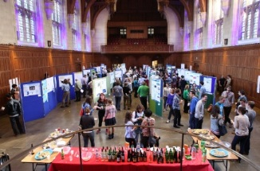

Coronavirus (COVID-19)
Due to the ongoing pandemic it is very likely that NSPPS will be postponed this year. We will make an announcement if and when a new plan is confirmed.
Monday 20th of April 2020, 2-5pm
Great Hall, Wills Memorial Building
Register here by 6th April!
NSPPS is a University-wide poster session for postgraduate students, aimed at increasing inter-departmental connections and exchanging new ideas across our interlinked disciplines.
There will be free food, beer, wine and softdrinks available to get everyone talking over the buffet table and the posters.
Post Graduate Research and Taught Students
Great Prizes to be won for the best posters, as voted by students and staff and judged by a panel.
Showcasing your research in the relaxed environment of NSPPS is a great way to promote your work and find out about current developments in Geosciences from across the University. We just ask that you stand by your poster for a 30 minute period during the 3 hour event.
Staff
Research staff, teaching staff and post-docs are warmly invited to attend and see the diversity of natural systems research being done by student researchers across the University.

Further information
Email: naturalsystemsandprocesses@gmail.com
Chemistry: Daniel Hoare
Chemistry/Earth Sciences: Mohd Al Farid Bin Abraham
Earth Sciences: Tom Olver, Kathryn Shaw, Fee Arens
Engineering: Pablo Lopez Filun
Geography: Leanne Archer